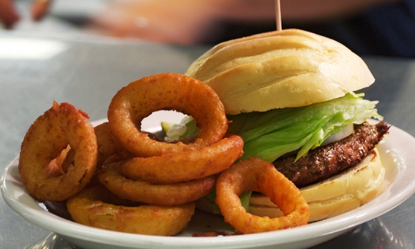
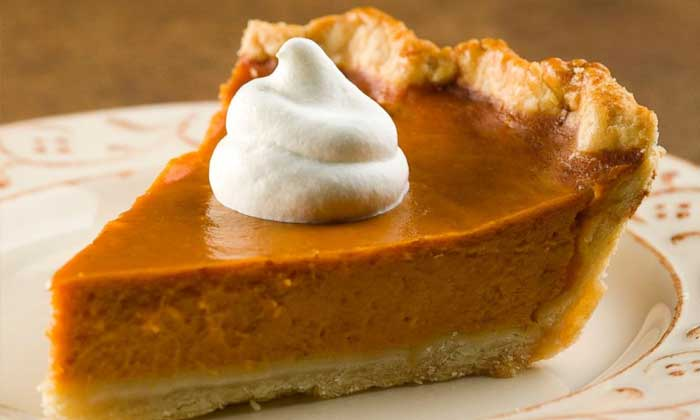

Welcome to Joe's Diner
Joe's Diner was opened in Buffalo in 1971. Joseph Shmoe Sr. started this diner with his wife Marla in order to bring their passion for mediocre sustenance to the already restaurant-saturated downtown Buffalo.



Bacon ipsum dolor amet meatloaf tenderloin pancetta, kielbasa spare ribs tongue fatback beef ribs sirloin tail. Tri-tip brisket drumstick sausage, cupim pancetta venison pig. Spare ribs meatball filet mignon flank pork chuck boudin prosciutto tenderloin beef ribs turkey. Ground round corned beef tri-tip pork, short loin boudin filet mignon cow capicola prosciutto leberkas short ribs spare ribs chuck.
Leberkas kielbasa tenderloin, sirloin biltong bacon corned beef. Tenderloin meatloaf beef ribs strip steak rump ground round, shank t-bone brisket pastrami. Shankle bresaola rump short ribs frankfurter venison beef andouille burgdoggen. Chicken cupim bresaola beef pastrami shank corned beef tongue.